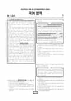

문제지

전국연합학력평가 · 시·도교육청 주관
2022년 4월 고3 학력평가 국어 언어와매체 1등급컷은 원점수 94점(추정), 표준점수 최고점은 135점입니다.
원점수 1등급컷은 공식 발표값이 아니라 EBSi·입시기관 값입니다. 등급별 값은 등급컷 표, 출처 구분은 데이터 원칙에 있습니다.

시험지를 먼저 풀어 보세요. 등급컷·표준점수·난이도는 흐리게 가려 뒀어요.
| 등급 | 원점수 | 표준점수 | 백분위 |
|---|---|---|---|
| 1 | 94 | 130 | 97 |
| 2 | 87 | 125 | 89 |
| 3 | 78 | 117 | 76 |
| 4 | 67 | 108 | 60 |
| 5 | 54 | 96 | 39 |
| 6 | 39 | 83 | 23 |
| 7 | 26 | 71 | 11 |
| 8 | 19 | 65 | 3 |
등급별 컷 · 입시기관 2곳 원점수 추정 종합(이투스·종로학원) · 공통+선택 점수 조합에 따라 다를 수 있음 · 만점 100점
| 등급 | 표준점수 이상 | 인원(명) | 비율 |
|---|---|---|---|
| 1 | 130 | 13,225 | 4.60882% |
| 2 | 125 | 19,610 | 6.83394% |
| 3 | 117 | 38,445 | 13.3978% |
| 4 | 108 | 45,652 | 15.9094% |
| 5 | 96 | 57,862 | 20.1645% |
| 6 | 83 | 47,604 | 16.5896% |
| 7 | 71 | 34,151 | 11.9014% |
| 8 | 65 | 20,499 | 7.14375% |
| 9 | 48 | 9,902 | 3.45078% |
국어 영역 전체 응시자 기준이에요.
출처: 시·도교육청이 공개한 전국연합학력평가 성적 분석·통계자료(공개 자료 보기).
EBSi 응답자 기준으로 가장 많이 틀린 문항은 25번(3점)이고, 오답률은 60.4%입니다. 오답률 50%를 넘은 문항은 3개입니다.
| 순위 | 문항 | 배점 | 오답률 | 정답 | 많이 고른 오답 |
|---|---|---|---|---|---|
| 1 | 25번 | 3점 | 60.4% | ④ | ③ 30.7% |
| 2 | 13번 | 3점 | 55.4% | ② | ③ 24.1% |
| 3 | 22번 | 3점 | 50.6% | ⑤ | ③ 23.2% |
| 4 | 12번 | 2점 | 47.7% | ② | ④ 18.6% |
| 5 | 16번 | 3점 | 42.2% | ⑤ | ④ 13.2% |
| 6 | 23번 | 2점 | 42.1% | ⑤ | ② 16.6% |
| 7 | 38번 | 2점 | 38.8% | ④ | ⑤ 19.2% |
| 8 | 7번 | 2점 | 38.3% | ⑤ | ② 20.4% |
| 9 | 11번 | 2점 | 36.6% | ④ | ① 13.1% |
| 10 | 18번 | 2점 | 36.5% | ④ | ③ 14.8% |
| 11 | 31번 | 2점 | 36.2% | ③ | ⑤ 15.9% |
| 12 | 34번 | 3점 | 35.5% | ④ | ② 15.5% |
| 13 | 24번 | 2점 | 34.7% | ④ | ⑤ 12.2% |
| 14 | 28번 | 2점 | 34.5% | ④ | ⑤ 13.4% |
| 15 | 29번 | 2점 | 31.2% | ③ | ① 8.7% |
EBSi 가채점 응답자 기준 · 전 문항 중 오답률 상위 15문항
출처: EBSi 역대 등급컷·오답률 공개 화면. 가채점에 참여한 EBSi 이용자 응답이라 전체 응시자 정답률과는 다를 수 있습니다.
발행 기관: 시·도교육청(전국연합학력평가). 파일 위치: 이 사이트가 보관한 사본. 저작권은 발행 기관에 있습니다. 원본과 다르거나 게시 중단이 필요하면 연락처로 알려 주세요. 등급컷 출처 구분은 데이터 원칙에서 설명합니다.
막대 색은 역대 대비 난이도 · 진한 막대가 이 시험 · 막대를 누르면 그 회차로 이동
| 회차 | 1등급컷 | 표점 최고 | 1등급 표점 | 난이도 |
|---|---|---|---|---|
| 4월 학평2022년 고3이 시험 | 94 | 135 | 130 | 매우 쉬움 |
| 3월 학평2022년 고3 | 88 | 144 | 132 | 보통 |
| 10월 학평2021년 고3 | 91 | 138 | 130 | 쉬움 |
| 7월 학평2021년 고3 | 83 | 148 | 132 | 매우 어려움 |
| 4월 학평2021년 고3 | 89 | 139 | 130 | 어려움 |
| 3월 학평2021년 고3 | 76 | 142 | 131 | 매우 어려움 |
공통과목 독서는 독서를 저자와 독자의 의사소통으로 본 독서론(1~3번), (가) 유학의 상도(常道)와 권도(權道), (나) 병자호란 당시 척화론과 주화론의 대립을 묶은 주제 통합형 인문 지문(4~9번), 기업의 영업비와 재무비, 영업레버리지도를 다룬 경제 지문(10~13번), 디지털 카메라의 대비 검출·위상차 자동 초점 방식을 다룬 기술 지문(14~17번)으로 구성되었습니다.
독서에서 가장 많이 틀린 13번(3점, 55.4%)은 영업레버리지를 이해하기 위한 학습지 <보기>에 반응하는 문항이었고, 같은 지문의 12번(47.7%)이 그다음이었습니다.
문학은 신석정 「역사」·문태준 「빈집의 약속」과 김석주의 「의훈」을 묶은 갈래 복합(18~22번), 홍계영 「희설」과 강복중 「수월정청흥가」를 묶은 고전 시가(23~26번), 최인호의 소설 「견습 환자」(27~30번), 작자 미상의 고전소설 「이태경전」(31~34번)으로 구성되었습니다.
이 회차 국어에서 가장 많이 틀린 25번(3점, 60.4%)은 '선생님'의 안내에 따라 「희설」과 「수월정청흥가」를 감상하는 문항이었고, 추상적 의미를 구체화하는 방식을 다룬 <보기>로 세 작품을 감상하는 22번(50.6%)도 오답률이 50%를 넘었습니다.
언어와 매체도 오답률 50%를 넘은 선택 문항이 없었습니다. 문법 지문은 한글 맞춤법의 '소리대로 적되 어법에 맞도록' 원칙을 다루었고, 예문 ㄱ~ㄷ을 이해하는 38번(2점, 38.8%)이 가장 많이 틀린 선택 문항이었습니다.
매체는 자율 주행 버스 시범 사업을 다룬 라디오 방송 진행표와 방송(40~43번), 기후 행동을 소개한 환경 동아리 블로그와 애플리케이션 제작 계획서(44~45번)를 다루었습니다.
최고점자가 2천 명을 넘은 쉬운 회차였기 때문에 고전 시가 감상 문항 하나가 등급을 갈랐습니다. 가사 작품은 화자가 처한 상황(병중, 은거 등)과 자연을 대하는 태도를 먼저 정리한 뒤 선택지를 판단하는 연습이 효과적입니다.